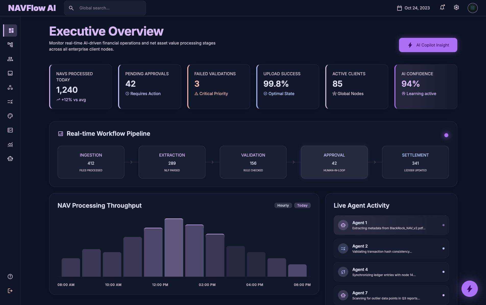
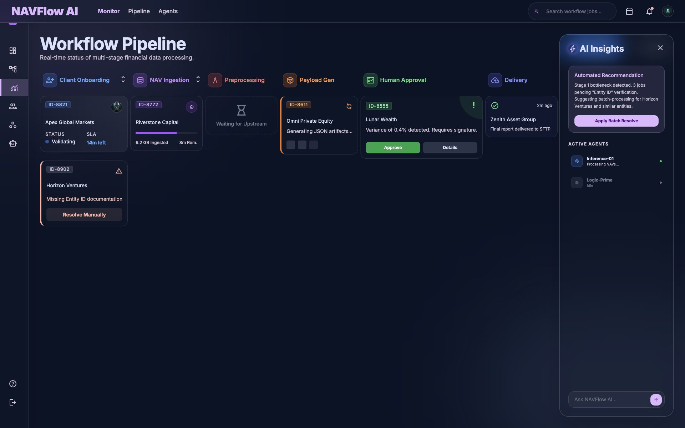
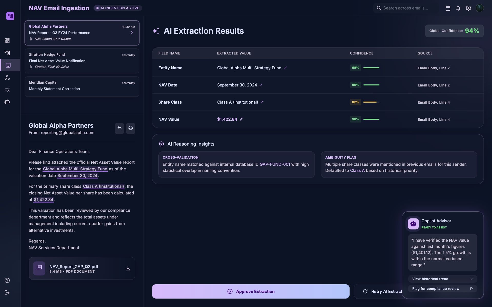
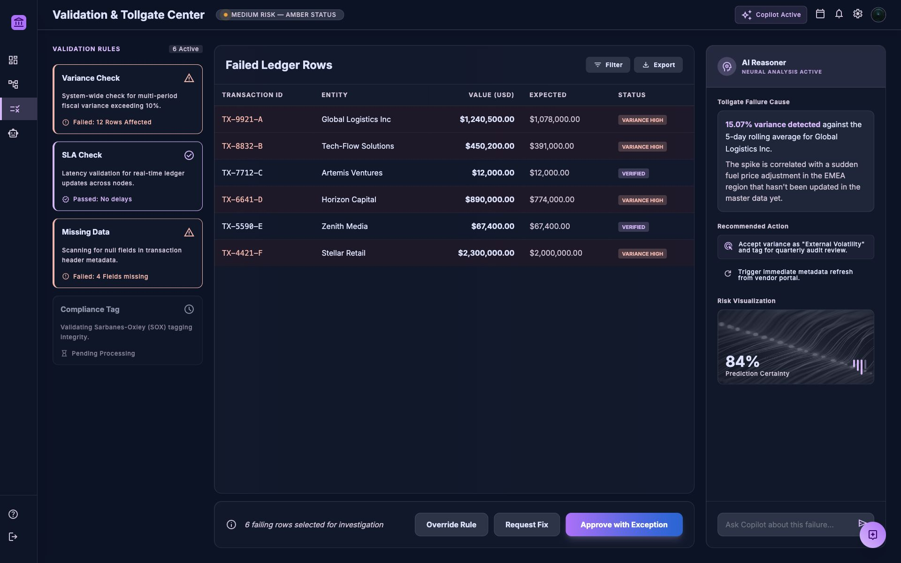
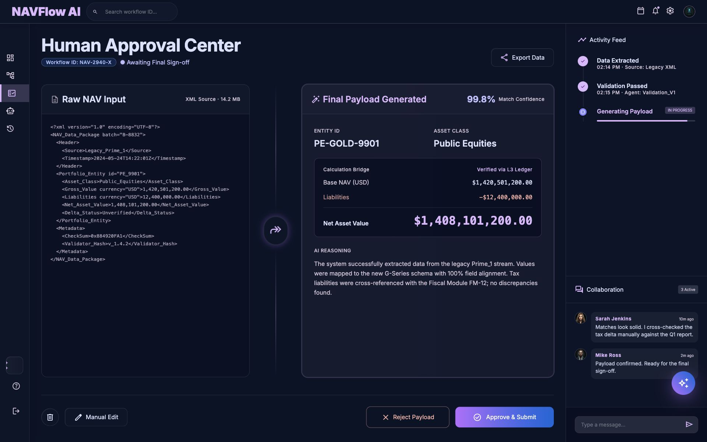
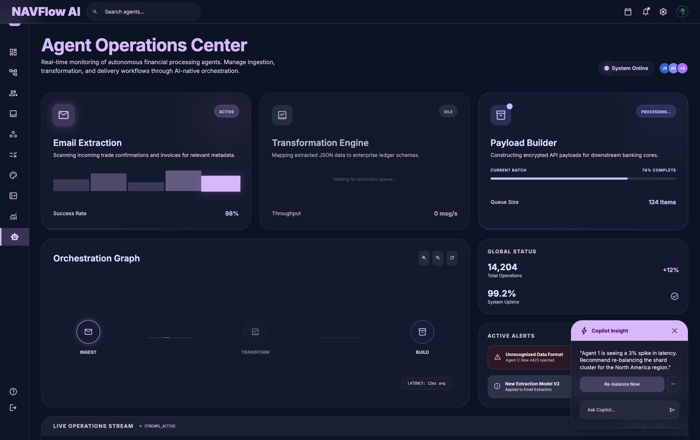

Enterprise FinOps · AI-native operations
NAVFlow AI
Transforming manual Net Asset Value operations into a transparent, automated, and audit-ready workflow where autonomous agents accelerate the work and people retain control.
Product Design LeadEnterprise SaaSAI orchestrationHuman-in-the-loop
NAVFlow AI● AI operations active94% confidence
LIVE WORKFLOW
OnboardIngestValidatePayloadApproveDeliver
● Extraction agent · 38 msg/s● Validation agent · 99.2% accuracy● Payload builder · 14 active jobs
One governed operating layer from unstructured email to downstream delivery.
NAVFlow AI coordinates the full NAV lifecycle: it reads incoming reports, extracts financial data, validates every field, generates downstream payloads, and routes exceptions to the right human. The experience makes autonomous work visible, explainable, and reversible.
Lead Product Designer
Product strategy, systems architecture, workflow design, AI trust patterns, prototyping, and design-system direction.
Financial operations teams
NAV analysts, operations leads, approvers, compliance partners, and platform administrators.
Automation with accountability
Increase straight-through processing while maintaining defensible human oversight and immutable auditability.
The operational problem
Critical financial operations were trapped in inboxes, spreadsheets, and manual handoffs.
Disconnected work surfaces
Operators moved between email, spreadsheets, rule engines, and delivery tools to complete one NAV.
Time spent on verification
Teams repeatedly checked copied values because source lineage and transformation logic were difficult to trust.
Invisible workflow failure
Exceptions surfaced late, making SLA breaches and downstream payload errors expensive to resolve.
Before & after transformation
Redesigning the operating model, not simply digitizing the same manual process.
The product shifts operators from copying and reconciling data to supervising an explainable system that handles routine work and surfaces only meaningful exceptions.
Before · Manual operationsFragmented and reactive
- Monitor shared inboxes for incoming NAV reports
- Copy values into spreadsheets and downstream templates
- Reconcile rule failures across disconnected tools
- Chase approvals through email and chat
- Discover delivery problems after SLA risk increases
AIOrchestrated transformation
After · NAVFlow AIAutomated and governed
- Agents ingest reports and link extracted values to source evidence
- Confidence thresholds automate low-risk decisions
- Tollgates prioritize exceptions by operational risk
- Approvers review complete lineage in one workspace
- Delivery and audit history remain continuously visible
Product strategy
Three principles defined how AI could operate responsibly in a regulated workflow.
Automate routine work, escalate meaningful uncertainty.
Agents proceed independently when confidence and policy thresholds are met, then route exceptions with complete context.
Every AI decision shows its evidence.
Field-level confidence, source linking, reasoning summaries, and variance checks turn AI output into reviewable work.
Every action becomes a defensible record.
Approvals, overrides, comments, transformations, and deliveries are captured for SOX tagging and regulatory playback.
Role-based experience architecture
One workflow, calibrated to the decisions each person is accountable for.
Shared system language preserves cross-functional alignment while each role receives the context, controls, and level of detail needed to act confidently.
AN
NAV analystResolve uncertainty with source-level evidence.
- Validate extracted fields and confidence
- Investigate variance and missing data
- Correct exceptions before approval
OP
Operations leadProtect throughput, SLAs, and team capacity.
- Monitor pipeline health and bottlenecks
- Prioritize high-risk workflows
- Rebalance agents and human queues
AP
Approver & complianceAuthorize outcomes with defensible lineage.
- Compare raw input and final payload
- Review overrides and AI reasoning
- Sign off with immutable audit history
Executive command center
Leaders see operational health, bottlenecks, and risk before SLAs are breached.
Real-time KPIs connect automation performance to active exceptions, agent activity, anomaly signals, and approval queues.

End-to-end orchestration
A single operational model connects every stage of the NAV lifecycle.
Configure clients, rules, and delivery contracts.
Parse emails, attachments, and source data.
Detect variance, missing fields, and risk.
Generate compliant XML and JSON.
Review evidence and authorize delivery.
Upload, monitor, and preserve audit history.

AI-powered ingestion
Extraction decisions remain connected to the exact source that produced them.
The split-screen workspace lets analysts compare incoming email content with extracted fields, confidence scores, cross-validation results, and the Copilot’s reasoning.

Validation & tollgate center
Exceptions become prioritized decisions instead of undifferentiated error queues.
The rule engine categorizes findings by risk, shows the affected data and policy, and provides governed resolution paths before a payload can advance.

Human-in-the-loop approval
People approve outcomes with the evidence, lineage, and collaboration context they need.
Review the source payload without leaving the final approval workspace.
See transformed values, match confidence, and AI reasoning side by side.
Track activity, comments, approvals, and final delivery in one immutable history.

AI agent operations
The automation itself becomes observable, governable, and accountable.
Operations teams can inspect agent health, throughput, dependencies, active jobs, and failure states rather than treating AI as an invisible black box.

Experience system
A semantic visual language makes complex financial workflows easier to scan and trust.
Stage colors establish location and progress across the complete lifecycle.
● 98% verified◐ Review required! High risk
Confidence, risk, and evidence remain visible at every decision.
- Role-based permissions
- Human override controls
- Immutable audit history
- Source-linked AI reasoning
Interaction strategy
Depth without disorientation: deciding when the interface should interrupt, explain, or stay out of the way.
Primary work remains stable and navigable.
Command centers, pipelines, validation workspaces, and approval centers use dedicated pages because operators need durable URLs, broad comparison space, and persistent task context.
Use for · Monitoring, investigation, approvalAI reasoning appears beside the evidence.
Copilot, activity history, and detailed explanations use side panels so users can inspect supporting context without losing their place or covering the work being evaluated.
Use for · Explainability, collaboration, detailInterruption is reserved for irreversible decisions.
Overrides, final sign-off, and downstream delivery confirmations use focused modal moments that clearly state scope, risk, authority, and the resulting audit record.
Use for · Override, sign-off, deliveryImpact framework
Success means faster processing without sacrificing financial control.
The product establishes measurable targets across automation, accuracy, throughput, and operational risk while preserving the human judgment required for high-impact exceptions.
Future operating model
From automating today’s workflow to anticipating tomorrow’s operational risk.
The next product horizon uses accumulated lineage, exception patterns, and agent performance to help teams prevent issues before they enter the approval queue.
Explainable automation
Automate ingestion, validation, payload generation, and delivery with visible confidence and human tollgates.
Operational foundationPredictive risk orchestration
Forecast SLA breaches, identify likely source-data failures, and recommend queue rebalancing before bottlenecks form.
Proactive operationsContinuous financial intelligence
Learn from exceptions and approvals to improve policies, surface systemic risk, and optimize the end-to-end operating model.
Adaptive enterprise systemNext project